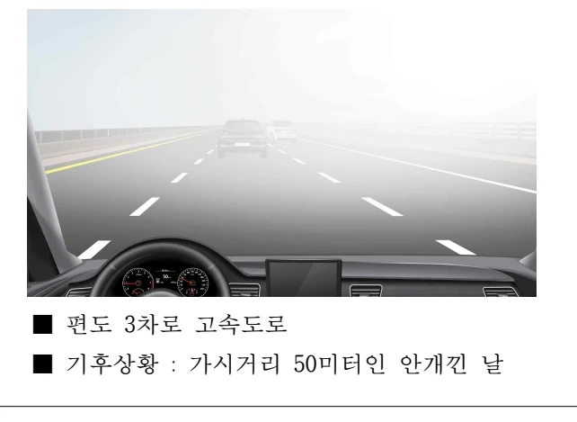

829. 다음 상황에서 가장 바람직한 운전방법 2가지는?

- ①1차로로 진로변경하여 빠르게 통행한다.
- ②등화장치를 작동하여 내 차의 존재를 다른 운전자에게 알린다.
- ③노면이 습한 상태이므로 속도를 줄이고 서행한다.
- ④앞차가 통행하고 있는 속도에 맞추어 앞차를 보며 통행한다.
- ⑤갓길로 진로변경하여 앞쪽 차들보다 앞서간다.
정답 보기
정답
② 등화장치를 작동하여 내 차의 존재를 다른 운전자에게 알린다.
③ 노면이 습한 상태이므로 속도를 줄이고 서행한다.
근거·해설
위험예측. 도로교통법 시행규칙 제19조. 제2항 비ㆍ안개ㆍ눈 등으로 인한 거친 날씨에는 제1항에도 불구하고 다음 각 호의 기준에 따라 감속 운행해야 한다. 다만, 경찰청장 또는 시ㆍ도경찰청장이 별표 6 Ⅰ. 제1호타목에 따른 가 변형 속도제한표지로 최고속도를 정한 경우에는 이에 따라야 하며, 가변형 속도제한표지로 정한 최고속도와 그 밖 의 안전표지로 정한 최고속도가 다를 때에는 가변형 속도제한표지에 따라야 한다. 1. 최고속도의 100분의 20을 줄인 속도로 운행하여야 하는 경우 가. 비가 내려 노면이 젖어있는 경우 나. 눈이 20밀리미터 미만 쌓인 경우 2. 최고속도의 100분의 50을 줄인 속도로 운행하여야 하는 경우 가. 폭우ㆍ폭설ㆍ안개 등으로 가시거리가 100미터 이내인 경우 나. 노면이 얼어 붙은 경우 다. 눈이 20밀리미터 이상 쌓인 경우 안개가 있는 도로를 통행하는 경우 도로교통법령에 따라 속도를 감속하고, 노면에 습기가 많은 상태이므로 제동 시 필요한 거리가 맑은 날보다 길어진다. 따라서 운전자는 급제동하는 상황이 없도록 하는 것이 중요하다. 이 때 일부 운전자들은 앞쪽의 차가 보이지 않으면 불안해 하는 경향이 나타나게 되고, 빠르게 통행하는 앞쪽 자동차라도 그 자동차를 확인하며 안전거리를 확보하지 않은 채 통행하는 행동이 나타나기도 한다. 안개가 있는 도로에서의 안전운전 방법은 가시거리가 짧아 앞쪽의 차가 보이지 않더라도 감속기준을 준수하고 때 에 따라서는 법에서 정한 감속의 기준보다 더욱 더 감속하는 자세라 할 수 있다. 그리고 다른 운전자가 나의 존재를 식별할 수 있도록 등화장치를 작동하는 방법도 활용할 수 있다.